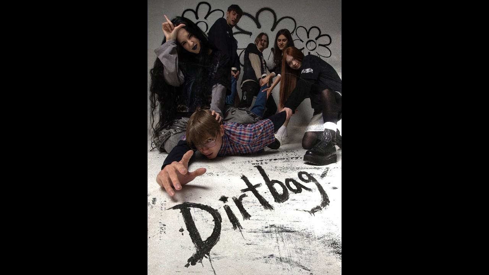
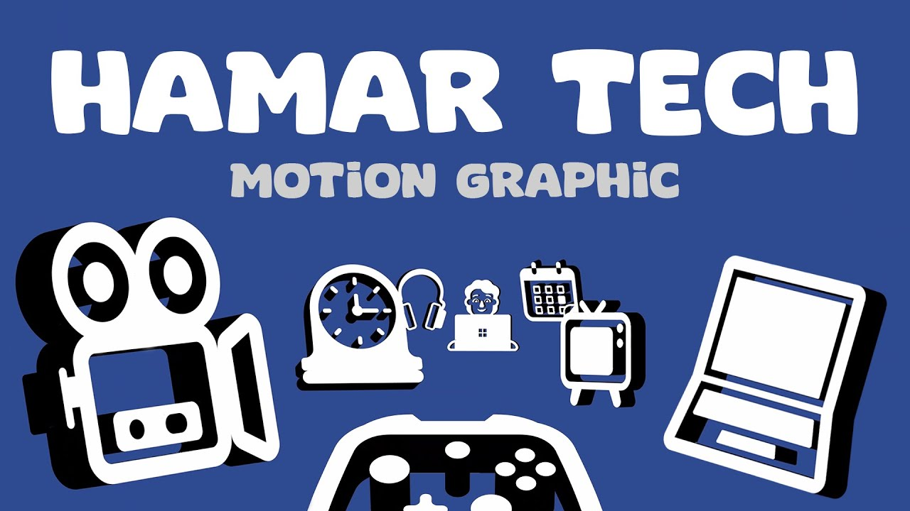
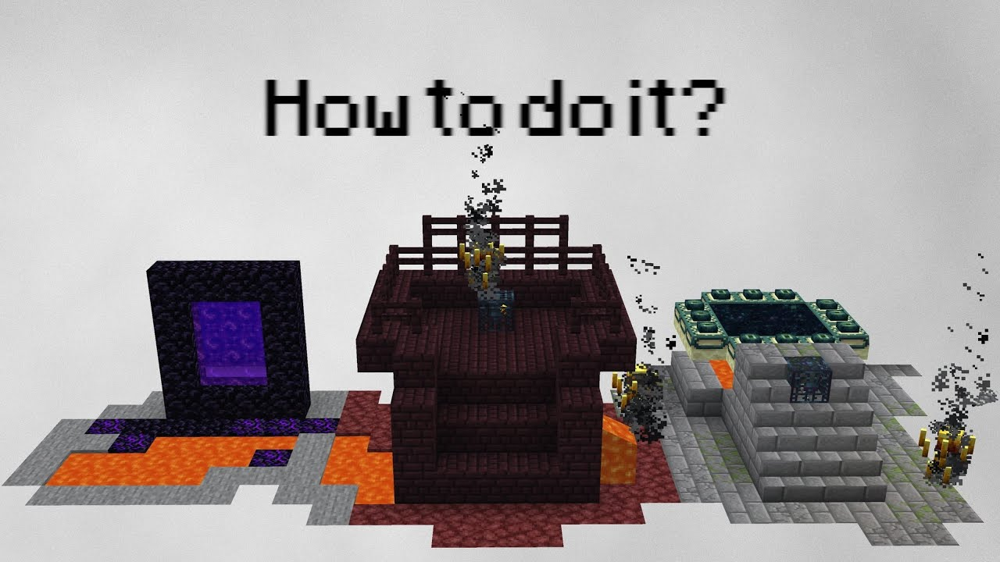
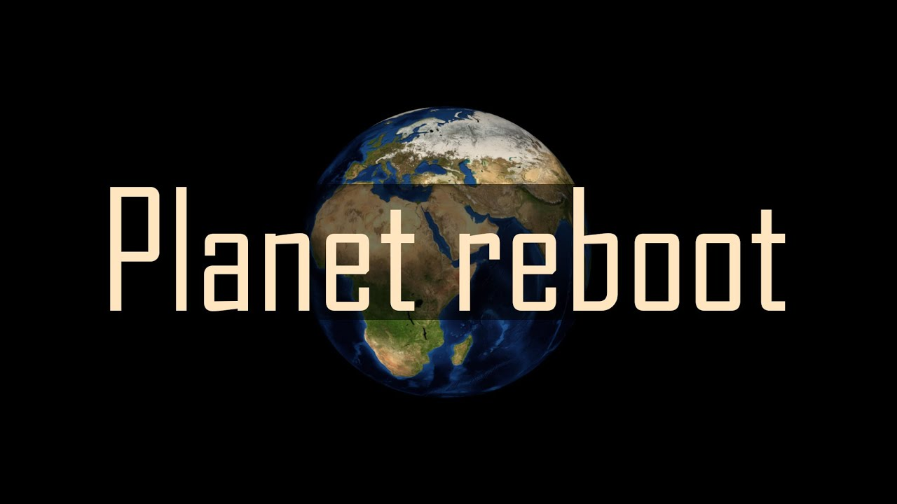

01 / Music video2026
FEATURED PROJECT
A creative take on a classic. Our cover music video, made as a student project.
Lead actor · Lead video editor
Danko Ustymenko
I’m a 20-year-old media production student turning footage into stories through editing, rhythm and motion.
01SELECTED PROJECTS
Four projects. Different perspectives. The same curiosity for moving images.

FEATURED PROJECT
A creative take on a classic. Our cover music video, made as a student project.
Lead actor · Lead video editor



Select a title for the story behind the project, or the image to watch the film.
02ABOUT ME
Media production · Hamar, Norway
I am 20 years old and study Media Production at upper secondary school. I am an organised and motivated person who enjoys creative work and working towards clear goals. I have experience working independently, taking responsibility and collaborating with others. I am punctual, reliable and eager to develop my skills in media and video production.
I enjoy working with visuals and learning through practical tasks. I take responsibility for my work, follow instructions carefully and always try to improve my results. Through school and work experience, I have become comfortable working both independently and with others, and I approach new tasks with a positive attitude and a willingness to learn.
03GET IN TOUCH
Have a project in mind? Get in touch for collaborations, school projects or internships.
danust16@innlandetfylke.no +47 406 10 422